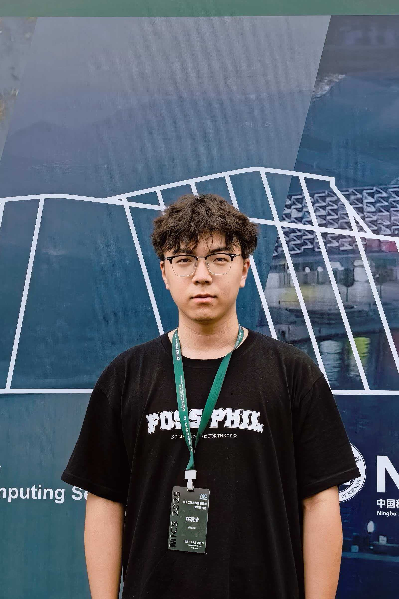
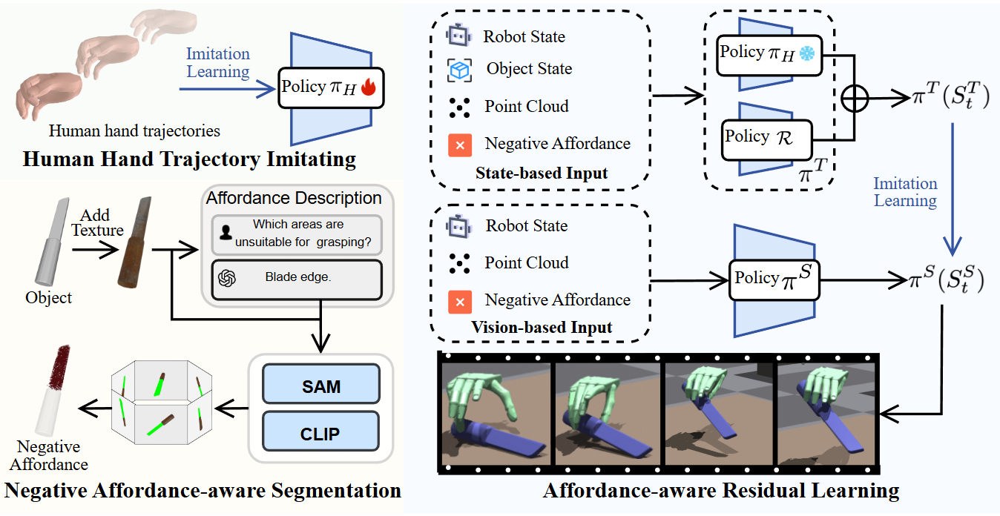
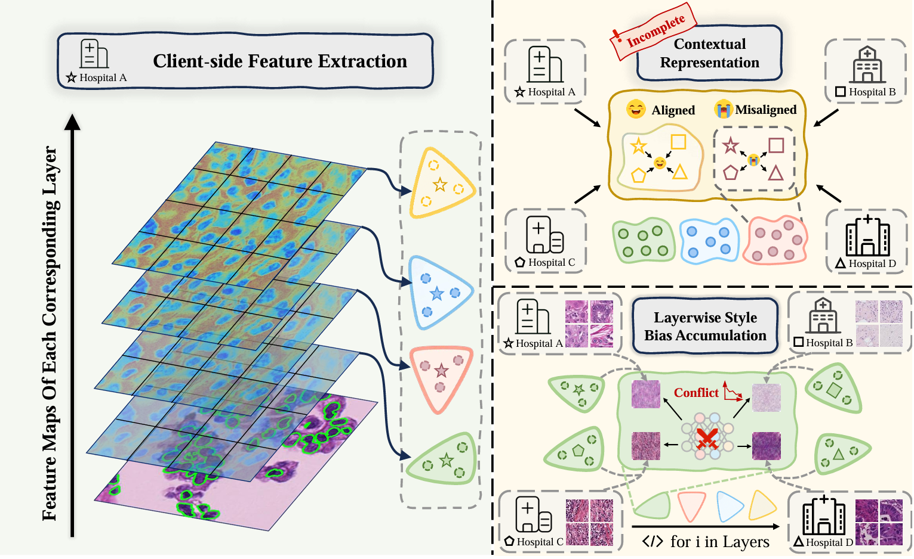
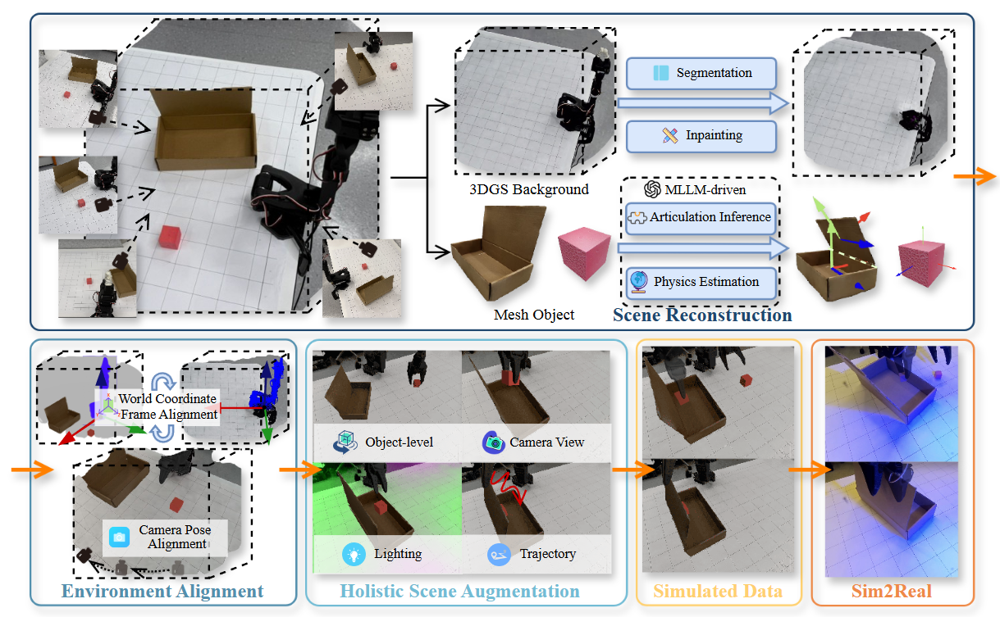
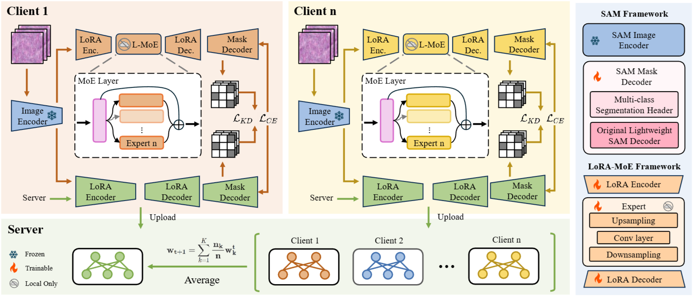
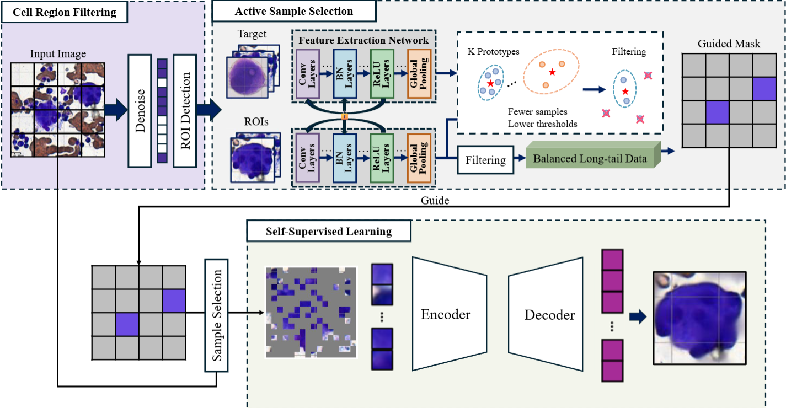
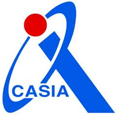

Linghao Zhuang | 庄凌浩

scholar | openreview | github
Undergraduate Student
School of Software Engineering
Xinjiang University
Email: 20222501513@stu.xju.edu.cn

scholar | openreview | github
Undergraduate Student
School of Software Engineering
Xinjiang University
Email: 20222501513@stu.xju.edu.cn
I'm a 4th-year undergraduate in Software Engineering at Xinjiang University (XJU) (新疆大学). In 2026, I will join the Institute of Basic Medical Sciences (IBMS), Chinese Academy of Medical Sciences & Peking Union Medical College (CAMS/PUMC) (中国医学科学院基础医学研究所 & 北京协和医学院(清华大学医学部)), advised by Prof. Yang Chen. My research interests span Medical AI and Embodied Intelligence.
Previously, I worked as a research intern at Xi'an Jiaotong University (XJTU) (西安交通大学), advised by Prof. Zhongyu Li, working with Xingyue Zhao and Prof. Zhiping Jiang (Xiangya Hospital, CSU 中南大学湘雅医院); and at Wuhan University (WHU) (武汉大学), working with Haoyu Zhao, in collaboration with Alibaba DAMO Academy (阿里巴巴达摩院). I am currently a research intern at the Institute of Automation, Chinese Academy of Sciences (CASIA) (中国科学院自动化研究所), working on multimodal large models.
I'm open to collaboration—feel free to reach me by e-mail.
[11/2025] Two papers are accepted by AAAI 2026.
[04/2025] One paper is accepted by IEEE EMBC 2025.
[11/2024] Won Bronze Medal at ACM-ICPC Asia Regional Contest.
[11/2024] Won Bronze Medal at CCPC National Regional Contest.
[05/2024] Won Gold Medal at CCPC National Invitational Contest (Changchun Site).
[05/2024] Won Silver Medal at CCPC National Invitational Contest (Shandong Site).
[05/2024] Won Gold Medal at ACM-ICPC Xinjiang Site.
[11/2023] Won Gold Medal at CCPC Xinjiang Site.
[11/2023] Won First Prize (Provincial) at China Undergraduate Mathematical Contest in Modeling.
Towards Affordance-Aware Robotic Dexterous Grasping with Human-like Priors
AAAI 2026
Haoyu Zhao*, Linghao Zhuang*, Xingyue Zhao*, Cheng Zeng, Haoran Xu, Yuming Jiang, Jun Cen, Kexiang Wang, Jiayan Guo, Siteng Huang, Xin Li, Deli Zhao, Hua Zou
AAAI Conference on Artificial Intelligence, 2026.
[arXiv]
[PDF]

Divide, Conquer and Unite: Hierarchical Style-Recalibrated Prototype Alignment for Federated Medical Segmentation
AAAI 2026
Xingyue Zhao, Wenke Huang, Xingguang Wang, Haoyu Zhao, Linghao Zhuang, Anwen Jiang, Guancheng Wan, Mang Ye
AAAI Conference on Artificial Intelligence, 2026.
[PDF]

High-Fidelity Simulated Data Generation for Real-World Zero-Shot Robotic Manipulation Learning with Gaussian Splatting
Preprint
Haoyu Zhao*, Cheng Zeng*, Linghao Zhuang*, Yaxi Zhao, Shengke Xue, Hao Wang, Xingyue Zhao, Zhongyu Li, Kehan Li, Siteng Huang, Mingxiu Chen, Xin Li, Deli Zhao, Hua Zou
arXiv preprint arXiv:2510.10637, 2025.
[arXiv]
[PDF]

pFedSAM: Personalized Federated Learning of Segment Anything Model for Medical Image Segmentation
Preprint
Tong Wang*, Xingyue Zhao*, Linghao Zhuang*, Haoyu Zhao, Jiayi Yin, Yuyang He, Gang Yu, Bo Lin
arXiv preprint arXiv:2509.15638, 2025.
[arXiv]
[PDF]

ActiveSSF: An Active-Learning-Guided Self-Supervised Framework for Long-Tailed Megakaryocyte Classification
EMBC 2025
Linghao Zhuang, Ying Zhang, Gege Yuan, Xingyue Zhao, Zhiping Jiang
IEEE Engineering in Medicine and Biology Conference, 2025.
[arXiv]
[PDF]



🥇 Gold Medal, CCPC National Invitational Contest (Changchun Site), 2024.05
CCPC中国大学生程序设计竞赛全国邀请赛金牌(长春站)
🥈 Silver Medal, CCPC National Invitational Contest (Shandong Site), 2024.05
CCPC中国大学生程序设计竞赛全国邀请赛银牌(山东站)
🥉 Bronze Medal, ACM-ICPC Asia Regional Contest, 2024.11
ACM-ICPC国际大学生程序设计竞赛亚洲区域赛铜牌
🥉 Bronze Medal, CCPC National Regional Contest, 2024.11
CCPC中国大学生程序设计竞赛全国区域赛铜牌
🎖️ Third Prize, 14th Lanqiao Cup National Competition (Group A), 2023.06
第十四届蓝桥杯全国软件和信息技术专业人才大赛A组三等奖
🎖️ Third Prize, 2024 GPLT National Finals, 2024.04
2024团体程序设计天梯赛全国决赛三等奖
🥇 Gold Medal, CCPC Xinjiang Site, 2023.11
CCPC中国大学生程序设计竞赛新疆站金牌
🥇 Gold Medal, ACM-ICPC Xinjiang Site, 2024.05
ACM-ICPC国际大学生程序设计竞赛新疆站金牌
🏅 First Prize (Provincial), China Undergraduate Mathematical Contest in Modeling, 2023.11
全国大学生数学建模竞赛省级一等奖
🏅 Second Prize, 10th National Undergraduate Statistical Modeling Contest (Xinjiang), 2024.07
第十届全国大学生统计建模大赛新疆赛区二等奖